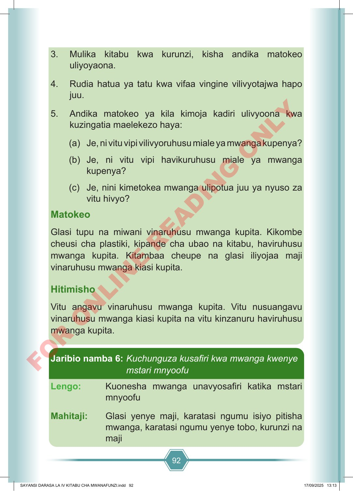

92 3. Mulika kitabu kwa kurunzi, kisha andika matokeo uliyoyaona. 4. Rudia hatua ya tatu kwa vifaa vingine vilivyotajwa hapo juu. 5. Andika matokeo ya kila kimoja kadiri ulivyoona kwa kuzingatia maelekezo haya: (a) Je, ni vitu vipi vilivyoruhusu miale ya mwanga kupenya? (b) Je, ni vitu vipi havikuruhusu miale ya mwanga kupenya? (c) Je, nini kimetokea mwanga ulipotua juu ya nyuso za vitu hivyo? Matokeo Glasi tupu na miwani vinaruhusu mwanga kupita. Kikombe cheusi cha plastiki, kipande cha ubao na kitabu, haviruhusu mwanga kupita. Kitambaa cheupe na glasi iliyojaa maji vinaruhusu mwanga kiasi kupita. Hitimisho Vitu angavu vinaruhusu mwanga kupita. Vitu nusuangavu vinaruhusu mwanga kiasi kupita na vitu kinzanuru haviruhusu mwanga kupita. Jaribio namba 6: Kuchunguza kusafiri kwa mwanga kwenye mstari mnyoofu Lengo: Kuonesha mwanga unavyosafiri katika mstari mnyoofu Mahitaji: Glasi yenye maji, karatasi ngumu isiyo pitisha mwanga, karatasi ngumu yenye tobo, kurunzi na maji SAYANSI DARASA LA IV KITABU CHA MWANAFUNZI.indd 92 SAYANSI DARASA LA IV KITABU CHA MWANAFUNZI.indd 92 17/09/2025 13:13 17/09/2025 13:13 F O R O N L I N E R E A D I N G O N L Y